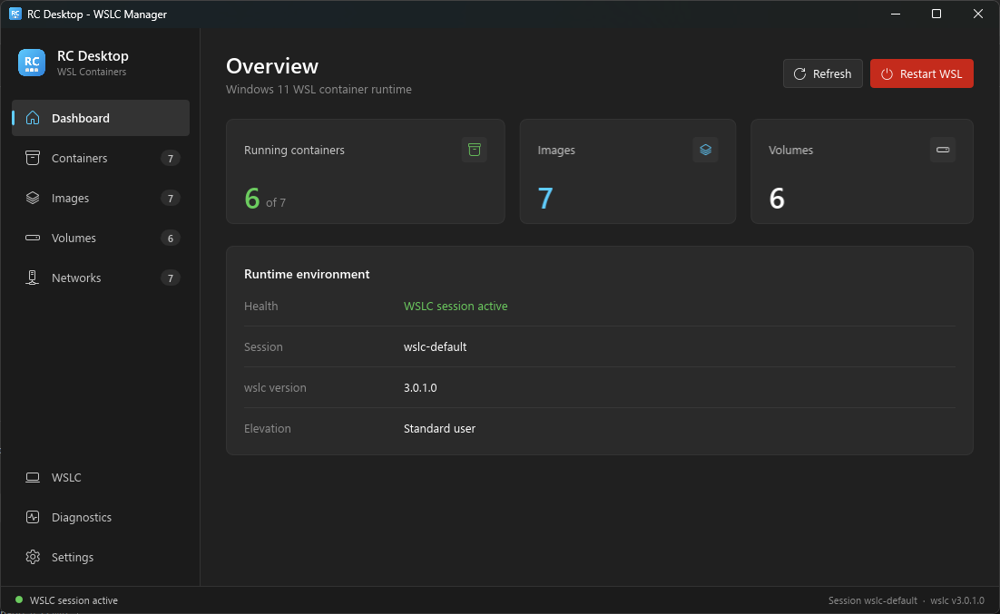
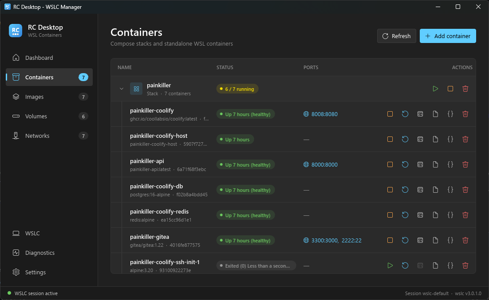
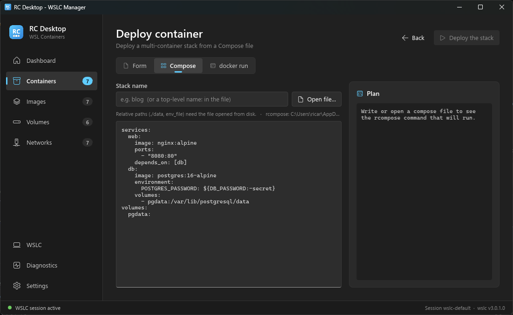
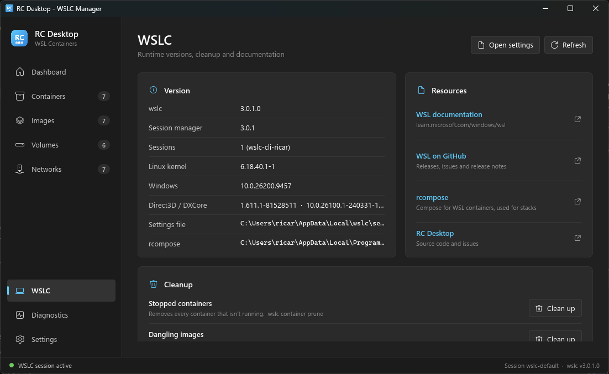
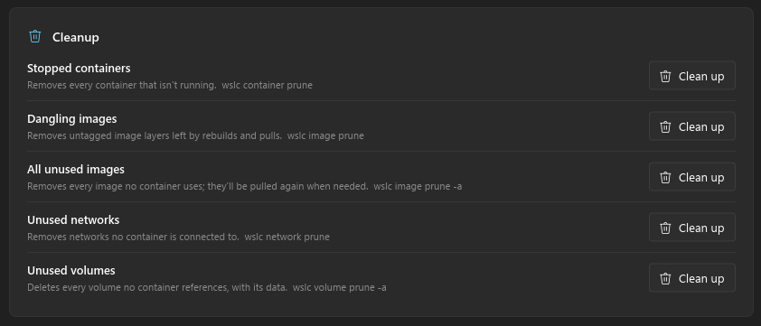

A desktop for WSL Containers
Manage containers, images, volumes and Compose stacks running on wslc.exe. Like Docker Desktop, without dragging a whole Electron app along.

What it does
Rust + Slint. It starts fast, uses little memory, and just calls wslc.exe underneath.
Containers & stacks
Start, stop, restart and remove containers. Compose projects are grouped into stacks you can start, stop or take down at once.
Deploy three ways
A form with a live wslc run preview, a pasted docker-compose.yml, or a docker run command converted for you.
Compose with rcompose
wslc has no compose command, so RC Desktop ships with rcompose and streams its output into the app.
Logs, inspect, shell
View logs and inspect output, or open a shell in a container through Windows Terminal.
Images, volumes, networks
Pull and remove images, delete volumes and networks. Published ports are links straight to localhost.
Lives in the tray
Keeps running when closed, shows how many containers are up, can start with Windows, and has a shortcut to wsl --shutdown.
wslc doesn't like being called concurrently: two calls at once can fail with ERROR_SHARING_VIOLATION. RC Desktop runs every command through a single queue and retries with backoff.
A quick tour
Everything you'd reach for in a container desktop, on top of wslc.
Stacks and containers
Compose projects show up as stacks with their running count. Expand one to stop, restart, open a shell, read logs or inspect each container. Published ports open in your browser.

Deploy from Compose
Paste or open a docker-compose.yml, see the rcompose command it will run, and deploy the stack. Prefer a form or a docker run line? Those tabs are right there.

Runtime at a glance
The WSLC page shows wslc, kernel and Windows versions, active sessions, where the settings file and rcompose live, and links to the docs.

One-click cleanup
Prune stopped containers, dangling or unused images, networks and volumes. Each button tells you exactly which wslc … prune it runs.

Install
You need Windows 11 with the WSL container preview (wslc.exe) installed.
Installer
Download rcdesktop-setup.exe and run it. It installs per user with rcompose, a Start menu shortcut and an uninstaller.
Portable zip
Grab the .zip for your architecture from the latest release, unzip anywhere and run rcdesktop.exe.
From source
Rust 1.80+. There's a mock mode with fake data if you don't have wslc.
cargo run --release
cargo run -- --mock